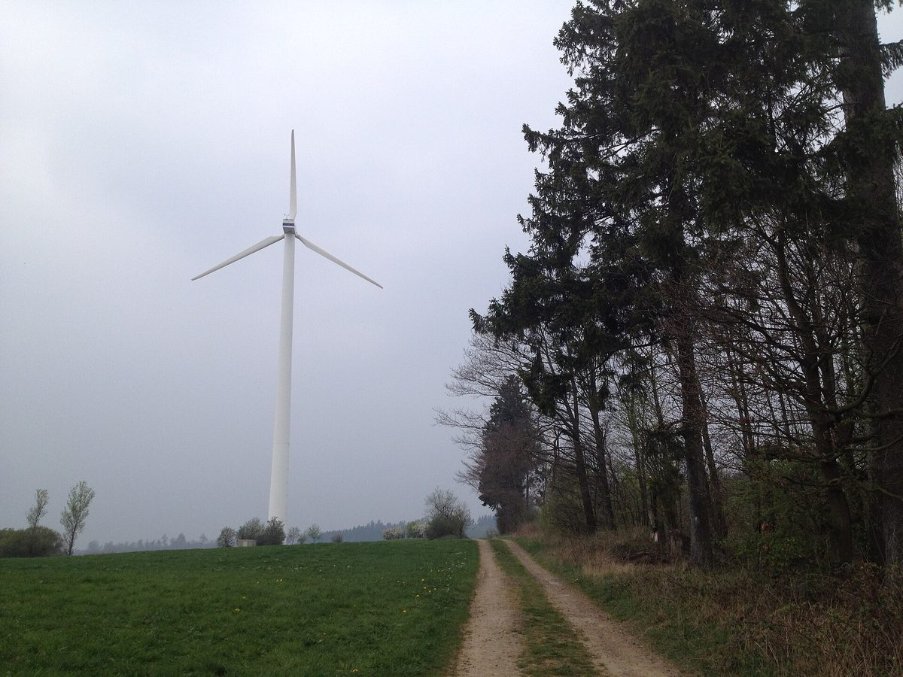

독일 니스테탈 시민에너지협동조합 DEiN, 조합원 303명에 5% 배당…풍력단지 증설에 42만 유로 출자

2025년 순이익 9만9,207유로·대차대조표 268만 유로로 최고…태양광 10기 운영하며 풍력단지 3곳 지분 보유, 출자는 1인당 연 20좌로 제한
독일 헤센주 카셀군 니스테탈의 시민에너지협동조합 DEiN(Deine Energie in Niestetal)이 2025년 세후 당기순이익 9만9,207유로를 내고 조합원에게 5%를 배당하기로 했다. 배당 대상 출자 1좌(250유로)당 12.50유로이며, 2025년 대차대조표 합계는 약 268만 유로로 2024년보다 16만 유로 늘어 최고치를 기록했다. 순이익은 2024년 18만757유로보다 줄었는데, 위르겐 드레비츠 이사는 투자를 했기 때문이라고 설명했다. 2013년 4월 설립된 이 조합은 조합원 303명이 8,692좌, 출자금 215만7,000유로를 갖고 있으며, 기존·신규 조합원 모두 1년에 20좌까지만 추가 출자할 수 있는 제한을 이어 가고 있다. DEiN은 8~76kW 규모 자체 태양광 10기에서 연 39만kWh를 생산하고 크로이츠슈타인(1.9%)·슈티프츠발트(4%)·죄레발트/니스테탈(2.5%) 풍력단지 3곳의 지분을 갖고 있다. 지금 슈티프츠발트 풍력단지에 7MW급 발전기 3기를 더 세우는 기초 공사가 진행 중으로 DEiN은 이 증설에 약 42만 유로를 출자하며, 북헤센의 다른 시민에너지협동조합들과 함께 리베나우의 브라트베르크 풍력단지에도 투자하고 있다.
시민에너지 관점
조합원 303명이 1좌 250유로씩 모은 215만7,000유로로 태양광 10기를 돌리고 모두 6만1,500가구분 전기를 만드는 풍력단지 3곳의 지분을 사들여 5% 배당을 낸다는 것은, 시민 출자가 작은 지붕에서 대형 풍력까지 커 갈 수 있음을 보여 준다. 지분이 2~4%에 그쳐 영향력이 작다는 지적이 나올 수 있지만, 여러 협동조합이 함께 투자하고 증설 때마다 몫을 늘려 가면 지역의 돈이 지역 발전소에 묶이고 배당도 지역에 남는다. 배당은 한 해 소득에 그치지 않고 조합원이 발전소의 주인으로 남는 자산이 된다. 국내 풍력·태양광 단지도 계획 단계부터 주민협동조합이 지분을 사들일 몫을 열어 두고, 증설 때마다 그 몫을 넓혀 가야 한다.
출처: HNA 2026-10-23 Boris Naumann 원문 보기
独ニーステタールの市民エネルギー協同組合DEiN、組合員303人に5％配当…風力発電所の増設に42万ユーロを出資
2025年の純利益9万9,207ユーロ・貸借対照表268万ユーロで過去最高…太陽光10基を運営し風力発電所3カ所に出資、出資は1人年20口まで
ドイツ・ヘッセン州カッセル郡ニーステタールの市民エネルギー協同組合DEiN（Deine Energie in Niestetal）は、2025年に税引き後で9万9,207ユーロの当期純利益を上げ、組合員に5％を配当することを決めた。配当対象の出資1口（250ユーロ）当たり12.50ユーロで、2025年の貸借対照表合計は約268万ユーロと2024年より16万ユーロ増え、過去最高となった。純利益は2024年の18万757ユーロから減ったが、ユルゲン・ドレーヴィッツ理事は投資を行ったためだと説明した。2013年4月に設立された組合の組合員は303人で、8,692口、出資金215万7,000ユーロを保有しており、既存・新規の組合員ともに年20口までしか追加出資できない制限を続けている。DEiNは出力8～76kWの自前の太陽光10基で年39万kWhを発電し、クロイツシュタイン（1.9％）、シュティフツヴァルト（4％）、ゼーレヴァルト／ニーステタール（2.5％）の風力発電所3カ所に出資している。現在、シュティフツヴァルト風力発電所では7MW級の風車3基を増設する基礎工事が進んでおり、DEiNはこの増設に約42万ユーロを出資するほか、北ヘッセンの他の市民エネルギー協同組合とともにリーベナウのブラートベルク風力発電所にも投資している。
市民エネルギーの視点
組合員303人が1口250ユーロずつ集めた215万7,000ユーロで太陽光10基を動かし、合わせて6万1,500世帯分の電力を生む風力発電所3カ所の持ち分を買って5％の配当を出していることは、市民の出資が小さな屋根から大型風力まで育ち得ることを示している。持ち分が2～4％にとどまり影響力は小さいとの指摘もあり得るが、複数の協同組合が共同で投資し、増設のたびに持ち分を増やしていけば、地域のお金が地域の発電所に結び付き、配当も地域に残る。配当は一年限りの所得にとどまらず、組合員が発電所の持ち主であり続ける資産となる。韓国の風力・太陽光発電所も、計画段階から住民協同組合が持ち分を買える枠を設け、増設のたびにその枠を広げていくべきだ。
出典: HNA 2026-10-23 Boris Naumann 原文を読む
德国尼斯特塔尔公民能源合作社DEiN向303名社员派发5%红利…出资42万欧元参与风电场扩建
2025年净利润99,207欧元、资产负债表总额268万欧元创新高…运营10座光伏并持有3座风电场股份，每人每年出资限20股
德国黑森州卡塞尔县尼斯特塔尔（Niestetal）的公民能源合作社DEiN（Deine Energie in Niestetal）2025年税后净利润为99,207欧元，决定向社员派发5%的红利。每股（250欧元）可分红12.50欧元；2025年资产负债表总额约268万欧元，比2024年增加16万欧元，创历史新高。净利润低于2024年的180,757欧元，理事Jürgen Drewitz解释说这是因为进行了投资。该合作社成立于2013年4月，303名社员持有8,692股、出资额215.7万欧元，目前仍维持限制，新老社员每年最多只能追加认购20股。DEiN自有10座光伏电站，单座装机8至76千瓦，年发电39万千瓦时，并持有Kreuzstein（1.9%）、Stiftswald（4%）、Söhrewald/Niestetal（2.5%）三座风电场的股份。Stiftswald风电场目前正在为新增的3台7兆瓦级风机浇筑基础，DEiN为此次扩建出资约42万欧元，还与北黑森其他公民能源合作社一起投资Liebenau的Bratberg风电场。
市民能源视角
303名社员每股250欧元凑出215.7万欧元，运营10座光伏，又买下合计可供61,500户用电的三座风电场的股份并派发5%红利，这说明公民出资可以从小屋顶一路成长到大型风电。有人会指出2%至4%的股份影响力有限，但多家合作社联合投资、每次扩建都增加份额，本地的钱就会扎根在本地电站，红利也留在本地。红利不只是一年的收入，而是让社员始终作为电站主人的资产。韩国的风电和光伏项目也应从规划阶段起就为居民合作社留出可购买的股份，并在每次扩建时扩大这一份额。
来源: HNA 2026-10-23 Boris Naumann 查看原文
German citizen energy co-op DEiN in Niestetal pays 5% dividend to 303 members and puts €420,000 into wind farm expansion
2025 net profit of €99,207 and record balance sheet of €2.68 million; co-op runs 10 solar arrays, holds stakes in three wind farms and still caps new shares at 20 per member a year
DEiN (Deine Energie in Niestetal), a citizen energy cooperative in Niestetal in the Kassel district of Hesse, Germany, posted an after-tax net profit of €99,207 for 2025 and will pay its members a 5% dividend. That works out to €12.50 per eligible €250 share, and the co-op's 2025 balance sheet total reached a record of about €2.68 million, up €160,000 from 2024. Net profit was down from €180,757 in 2024, which board member Jürgen Drewitz attributed to investments the co-op had made. Founded in April 2013, the co-op has 303 members holding 8,692 shares worth €2.157 million, and it is keeping a limit under which existing and new members can subscribe to no more than 20 additional shares a year. DEiN produces 390,000 kWh a year from 10 solar arrays of its own, rated between 8 and 76 kW, and holds stakes in three wind farms: Kreuzstein (1.9%), Stiftswald (4%) and Söhrewald/Niestetal (2.5%). Foundations are now being poured for three additional 7-MW-class turbines at Stiftswald, an expansion in which DEiN is investing about €420,000, and together with other North Hesse citizen energy co-ops it is also investing in the Bratberg wind farm in Liebenau.
Citizen Energy View
Three hundred and three members pooling €2.157 million in €250 shares to run 10 solar arrays, buy into three wind farms that together supply 61,500 households, and pay a 5% dividend shows that citizen investment can grow from small rooftops to large-scale wind. Some will say stakes of 2% to 4% carry little weight, but when several co-ops invest together and add to their share with every expansion, local money stays tied to local power plants and the dividends stay local too. A dividend is not just one year's income; it is an asset that keeps members as owners of the plant. Wind and solar projects in Korea should set aside a share that residents' cooperatives can buy from the planning stage, and widen it with every expansion.
Source: HNA 2026-10-23 Boris Naumann Read the original